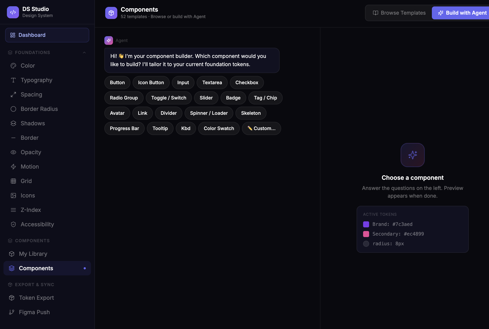
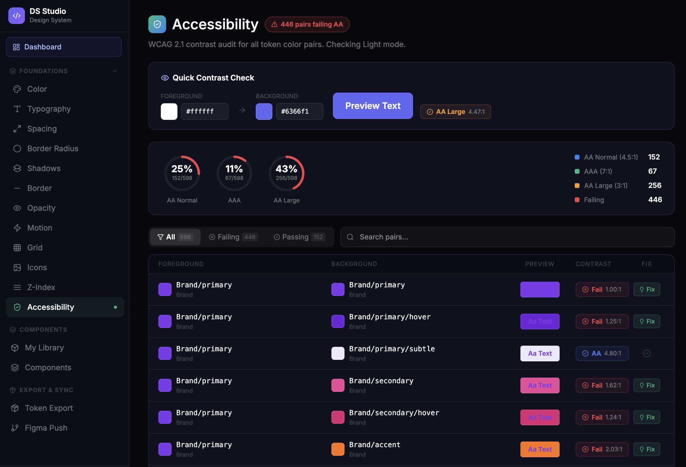
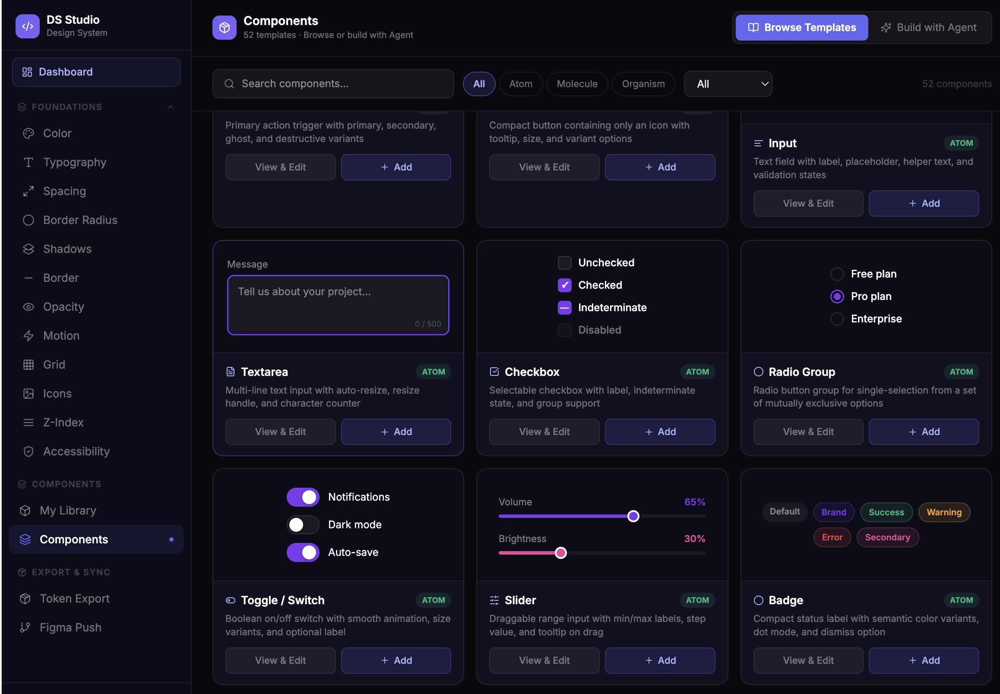
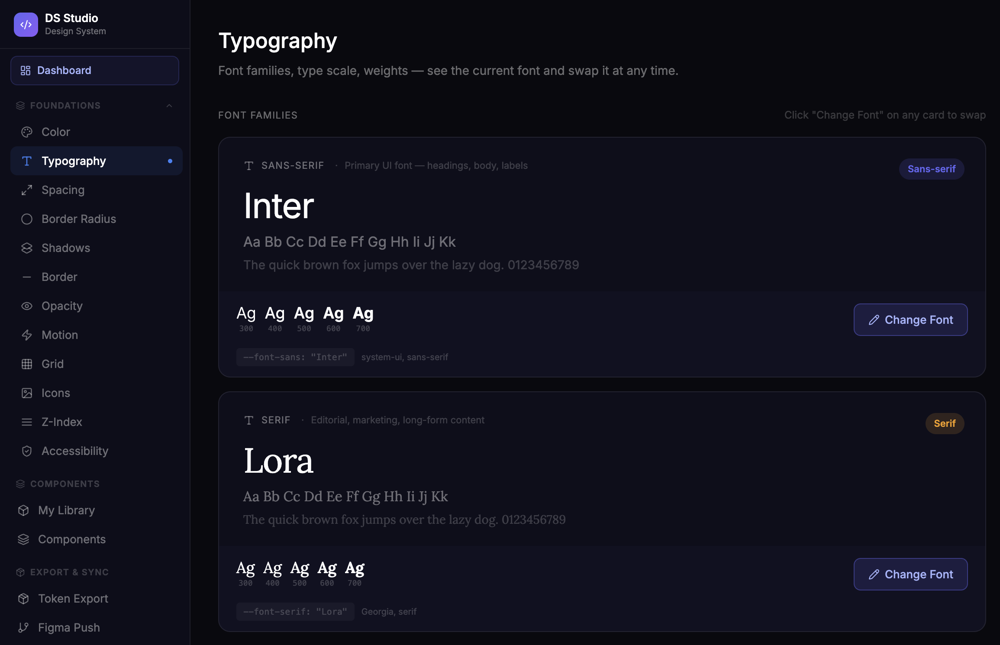

Design tokens live in Figma. Components get rebuilt from scratch. Nobody trusts the same source of truth.
DS Studio is a single platform bridging design and development — from raw tokens to Figma components to production-ready React code. I designed the full product from zero: the information architecture, component system, AI-powered builder, accessibility tooling, and Figma sync.
Built as a side project using Figma Make for the initial prototype and Lovable + Claude for rapid iteration — a process that validated the full design system in weeks rather than months.


Design tokens, component specs, and live code all live in different tools — owned by different people.
No single source of truth
Designers update tokens in Figma. Developers use hardcoded values in code. The two drift apart within weeks of launch — and nobody notices until a rebrand.
Broken handoff pipeline
Existing tools (Storybook, Zeroheight, Token Studio) each solve one part of the problem. Teams manage 3–5 tools to maintain one design system — creating fragility and duplication.
Accessibility is an afterthought
Contrast checks happen manually, late in the process. By the time contrast failures are caught, hundreds of token pairs are already baked into production.
Research
Audited Storybook, Zeroheight, Token Studio, and Style Dictionary. Mapped pain points in the token-to-code pipeline across 5 design teams.
Architecture
Defined a 3-phase product roadmap: Core Foundations → Component Builder → Figma Sync. Each phase ships value independently.
Design
Full app UI in Figma Make — dark-first, density-focused, developer-friendly. Built the complete design system for the product itself using DS Studio.
Prototype
Interactive prototype covering all core flows. Used Claude and Lovable to validate token-to-component logic before committing to final designs.


Foundations editor
Full token management across Color, Typography, Spacing, Border Radius, Shadows, Motion, Grid, Opacity, Z-Index, and Icons — all in one editor with live preview and version history.
AI Component Builder
An in-app agent generates components tailored to your active tokens. 52 templates spanning Atom → Molecule → Organism levels, with React/TypeScript output and Monaco code view.
Accessibility checker
WCAG 2.1 contrast audit across all token color pairs — live, automatic, and actionable. One-click fix suggestions for failing pairs before they ever reach production.
Figma Push & Token Export
OAuth 2.0 Figma integration to push color, text, and effect styles directly to your files. W3C JSON and Style Dictionary export for developer consumption from day one.
DS Studio proves that the gap between design and development is a tooling problem, not a people problem. By designing the full product end-to-end — including the AI agent UX, accessibility tooling, and Figma sync — I built a case for what the next generation of design system tooling should look like.